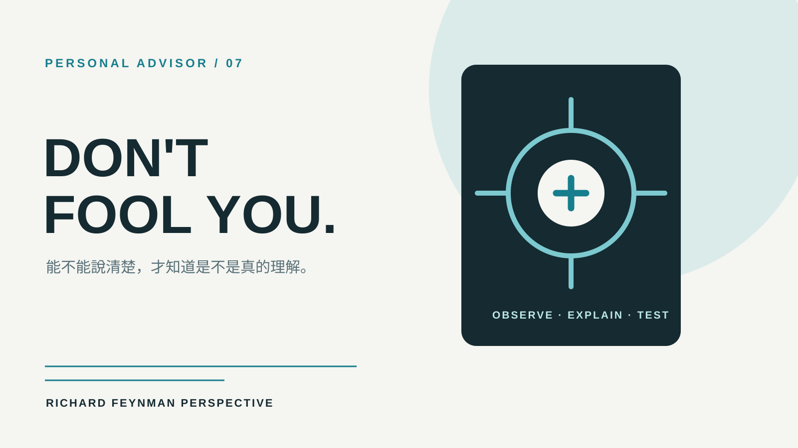

技能包 · 專屬顧問
Richard Feynman 專屬科學思考顧問
2026.08 · 個人專案

FIG. 17 — 產品主畫面
關於這個作品
以 Richard Feynman 的演講、訪談、著作與學術生涯資料為基礎蒸餾的專家 Agent。
它會把抽象名詞拉回可觀察的現象與第一手證據，要求用簡單語言說明真正理解的內容；適合用於學習、研究、技術決策與任何需要檢查「我們是不是其實沒有懂」的問題。
作品亮點
以簡單語言檢驗是否真正理解問題
把概念拉回可觀察現象與可驗證證據
主動尋找自欺、貨物崇拜與空洞術語
結合好奇心、懷疑精神與嚴肅的玩心